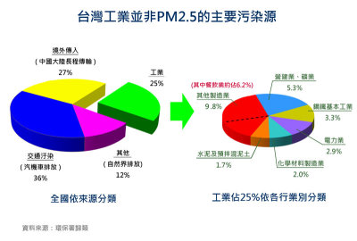
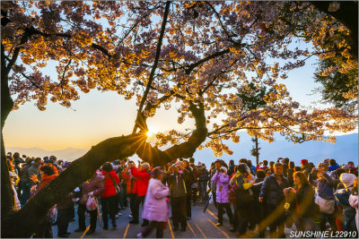
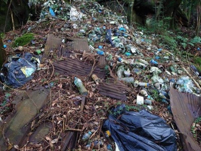
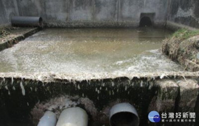
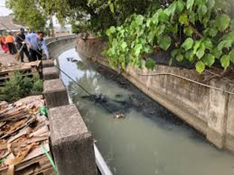

| 空氣污染問題 | 垃圾與觀光污染 | 氣候變遷對嘉義的影響 | |
| 空氣污染問題 | |
| 空氣污染是近年來越來越受到重視的環境問題，嘉義部分地區也會受到影響。造成空氣品質變差的原因很多，例如車輛排放廢氣、工業活動，以及季節變化帶來的境外污染。當空氣中的細懸浮微粒（PM2.5）濃度提高時，不僅天空容易看起來灰濛濛，也可能對人體健康造成影響，像是呼吸不順、過敏或喉嚨不舒服等問題。尤其老人與小孩更容易受到影響，因此改善空氣品質、減少污染來源，成為嘉義環境保護中重要的一環。平時除了政府加強管制外，民眾也可以多搭乘大眾運輸工具、減少空污排放，一起守護生活環境。 top | |
 |
|
| 垃圾與觀光污染 | |
| 嘉義擁有許多知名觀光景點，例如阿里山、文化路夜市及各地特色景區，每年都吸引大量遊客前來。然而，觀光發展雖然帶動經濟，卻也可能產生垃圾量增加、資源浪費及環境髒亂等問題。例如景點附近可能出現隨意丟棄垃圾、一次性用品過度使用等情況，不只影響市容，也可能對自然環境造成傷害。如果垃圾未妥善分類，還可能增加焚化與污染問題。因此，除了政府加強清潔與宣導外，民眾與遊客也應該養成隨手帶走垃圾、做好資源回收及減少浪費的習慣，才能讓嘉義在發展觀光的同時，也維持乾淨舒適的環境。 top | |
 |
 |
| 嘉義的水資源與水污染問題 | |
| 嘉義的水資源雖然豐富，但近年來也出現污染與浪費的問題。例如河川與水庫可能受到生活廢水、農業用肥料或工業排放影響，使水質下降。水質污染不只影響生態環境，也可能影響農業灌溉和居民生活用水。此外，隨著人口增加和都市化，水資源的管理和節約也變得更加重要。如果大家能從生活中節約用水、避免亂丟垃圾進入水源，以及政府加強河川巡查與水質監測，就能保護嘉義的水資源，讓城市與自然共存。 top | |
 |
 |